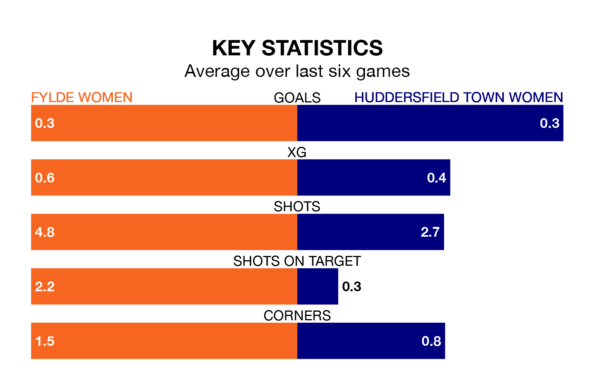

Sunday's early match sees the league's two bottom sides face each other, as rock-bottom Fylde Women host Huddersfield Town Women.
Fylde have picked up five points from their first five Women's National League Premier Division – North games, with no wins and five draws.
That is four points less than Huddersfield Town have collected, having won two and drawn three.
Fylde are in terrible form in the Women's National League Premier Division North, with no wins and two draws from their last six games.
With no wins and three draws over that period, Huddersfield Town's form is slightly better – they have taken three points from 18, compared to the home side's two.
In the last five years, Fylde and Huddersfield Town have played each other on five occasions. Fylde won two of them and Huddersfield Town three.
On average, Fylde scored 1.2 goals and Huddersfield Town 2.4 in those matches.
Their last meeting was on August 20, when Huddersfield Town won 4-2 at home.
With 13 goals in 17 games so far this season, the visitors are the league's joint-second-lowest scorers with 0.8 goals per game. And they are conceding more than average, letting in 41 goals at a rate of 2.4 per game.
Fylde are also below average scorers, with 0.8 goals per game, compared to a league average of 1.5. They have conceded 3.1 goals per game.
Fylde's last match was on March 31, a 1-0 loss against West Brom WFC.
Huddersfield Town lost 1-0 against Newcastle United Women last time out, on April 14.
Updated: 11:31 (UTC), 15/04/24